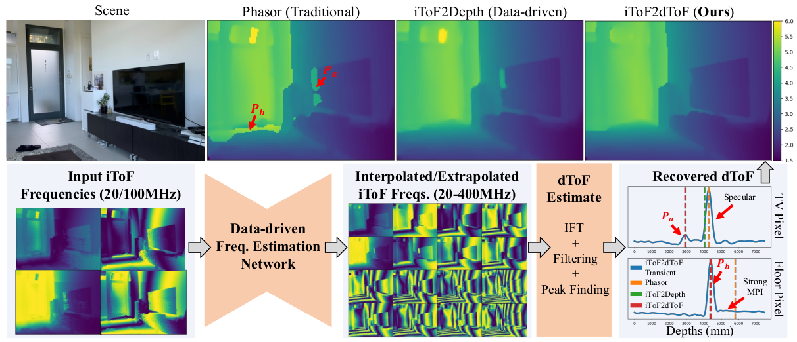

iToF2dToF: A Robust and Flexible Representation
for Data-driven Time-of-Flight Imaging
IEEE Transactions on Computational Imaging (2021)
- 1 SenseBrain Technology
- 2University of Wisconsin-Madison
- *Work completed during internship at SenseBrain


Overview
Indirect Time-of-Flight (iToF) cameras are a promising depth sensing technology. However, they are prone to errors caused by multi-path interference (MPI) and low signal-to-noise ratio (SNR). Traditional methods, after denoising, mitigate MPI by estimating a transient image that encodes depths. Recently, data-driven methods that jointly denoise and mitigate MPI have become state-of-the-art without using the intermediate transient representation. In this paper, we propose to revisit the transient representation. Using data-driven priors, we interpolate/extrapolate iToF frequencies and use them to estimate the transient image. Given direct ToF (dToF) sensors capture transient images, we name our method iToF2dToF. The transient representation is flexible. It can be integrated with different rule-based depth sensing algorithms that are robust to low SNR and can deal with ambiguous scenarios that arise in practice (e.g., specular MPI, optical cross-talk). We demonstrate the benefits of iToF2dToF over previous methods in real depth sensing scenarios.
Highlights
- A robust and flexible representation for data-driven iToF that improves depth sensing in different scenarios.
- An extensive validation of our data-driven models on real-world data with ground truth.
- A synthetic iToF dataset with realistic geometry, textures, and noise.
Technical Video
ICCP 2021 Poster Presentation
Dataset
Please fill out this form to get the link to the Google Drive of the dataset. The download link will be provided in the confirmation message right after submitting the form. Please bookmark it to avoid having to re-submit the form. Due to the size of the dataset we recommend downloading it in small parts (one folder at a time).
The dataset contains 5,000 sets of synthetic images rendered from 200 views of 25 scenes. A single set of images includes:
- RGB image
- Ground truth depth image
- iToF frequency images at 31 frequencies (0-600MHz in steps of 20MHz). Each frequency image is composed of an amplitude and a phase component. The iToF frequency images are obtained from the transient images of the same scene which were simulated using MitsubaToF.
- 4x4 camera view matrix
Sample Transient Images: The dataset also contains 25 sample high-resolution transient images (240x320x2000 and 120x160x2000), one for each of the scenes. These are the type of transient images used to simulated the iToF frequency data. These are available under sample_transient_images folder.
Bibtex Citation
Acknowledgments
* Work done during internship at SenseBrain Technology
The website template was borrowed from Michaël Gharbi.